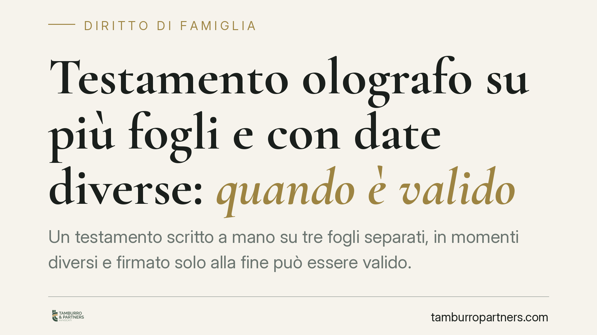

Testamento olografo su più fogli e con date diverse: quando è valido
Un testamento scritto a mano su tre fogli separati, in momenti diversi e firmato solo alla fine può essere valido. Lo ha riconosciuto una recente pronuncia di merito, in applicazione del favor testamenti. Ma la conservazione dell'atto non è automatica: occorre un collegamento materiale e sostanziale tra i fogli e una volontà certa. Vediamo quando l'olografo regge e quando espone a contenzioso.

Il caso
Un testatore aveva redatto le proprie ultime volontà a mano, su tre fogli distinti, vergati in momenti diversi e recanti date differenti. La sottoscrizione compariva una sola volta, in calce all'ultimo foglio. Gli eredi legittimi contestavano la validità dell'atto, che designava erede universale una nipote con disabilità.
Il giudice ha dichiarato valido il testamento, ritenendo che i fogli formassero un unico documento sul piano materiale e sostanziale e che la volontà del testatore fosse univoca e riconoscibile.
*Nota: il riferimento alla pronuncia di merito è da verificare quanto agli estremi esatti prima di ogni utilizzo processuale.*
Inquadramento normativo
Il testamento olografo è disciplinato dall'art. 602 c.c., che richiede tre requisiti essenziali: l'autografia (deve essere scritto per intero di pugno dal testatore), la data (giorno, mese e anno) e la sottoscrizione. La firma deve essere apposta in calce alle disposizioni.
Il punto delicato riguarda l'unicità del documento. La legge non impone che il testamento occupi un solo foglio. La giurisprudenza di legittimità (Cassazione civile) ha da tempo chiarito che l'olografo redatto su più fogli è valido quando tra essi sussiste un collegamento materiale (continuità fisica o di supporto) oppure un collegamento sostanziale (continuità logica e di contenuto del pensiero), tale da far emergere un'unica manifestazione di volontà. In presenza di tale collegamento, la sottoscrizione unica in calce all'ultimo foglio copre l'intero atto.
Sul piano dei principi, il favor testamenti — la tendenza dell'ordinamento a conservare l'atto di ultima volontà — trova un aggancio testuale nell'art. 590 c.c., che ammette la conferma e l'esecuzione volontaria di disposizioni testamentarie nulle da parte di chi ne conosce la causa di invalidità. È un principio di conservazione, non una sanatoria automatica.
Quanto alle date diverse, esse non comportano di per sé revoca. La revoca mediante testamento posteriore è disciplinata dall'art. 682 c.c. e presuppone una nuova disposizione incompatibile o una revoca espressa: la mera stratificazione temporale della scrittura, all'interno di un unico progetto testamentario, non integra revoca.
Implicazioni pratiche
Per chi redige un testamento in casa, il messaggio è duplice.
Da un lato, l'olografo su più fogli non è nullo in radice: la forma frammentaria può reggere. Dall'altro, il favor testamenti è un rimedio, non una garanzia. La conservazione dell'atto dipende da un accertamento del giudice sul collegamento tra i fogli e sulla certezza della volontà. Finché quell'accertamento non interviene, l'olografo irregolare è un fattore di contenzioso.
Il rischio è concreto quando la successione coinvolge soggetti vulnerabili. Nel caso in esame l'erede designata era una persona con disabilità: un testamento contestato può ritardare per anni l'attribuzione del patrimonio a chi ne ha più bisogno, esponendolo all'incertezza durante il giudizio.
Più i fogli sono separati, datati diversamente e privi di richiami reciproci, più aumenta il margine di impugnazione da parte degli eredi legittimi esclusi.
Cosa fare in concreto
- Redigi il testamento olografo di seguito, senza interruzioni tra un foglio e l'altro; se usi più fogli, numerali e richiamali espressamente tra loro per rendere evidente il collegamento.
- Apponi una data completa e coerente (giorno, mese, anno); evita date contraddittorie o intervalli temporali ampi che possano far dubitare dell'unicità del progetto.
- Firma per esteso in calce all'ultimo foglio e, in via prudenziale, sigla ogni pagina.
- Conserva l'originale in luogo sicuro o affidalo in deposito fiduciario a un notaio, per prevenire smarrimenti, alterazioni e contestazioni sull'autenticità.
- Quando la successione riguarda soggetti vulnerabili o patrimoni complessi, è preferibile ricorrere al testamento pubblico, ricevuto dal notaio alla presenza di testimoni: riduce sensibilmente il rischio di impugnazione formale.
Per situazioni con potenziali profili di conflitto tra eredi, consigliamo una verifica preventiva della forma e del contenuto delle disposizioni.
---
Contributo informativo a cura di Tamburro & Partners Avvocati. Non costituisce parere legale.
Ogni famiglia ha il suo equilibrio.
Separazione, divorzio, affidamento, assegno: se vuoi un confronto riservato su una specifica situazione, scrivi allo studio. Ti rispondiamo entro un giorno lavorativo.